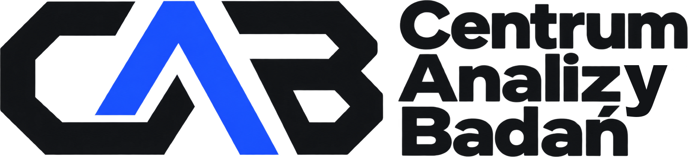

Oferta · 2026cab-innowacje.com
Spin-off · Technologia · B+R · Wdrożenia
Rozwiązujemy problemy technologiczne przedsiębiorstw
Od diagnozy i badań, przez optymalizację konstrukcji, materiałów i procesów, po dokumentację B+R i wdrożenie w firmie.
Obszary technologiczne
Energia i OZE
Efektywność energetyczna, fotowoltaika, audyty
Stomatologia, implanty i DSD
Cyfrowy workflow, materiały, walidacja
Materiały i ich właściwości
Dobór, modyfikacja i badania materiałów
Konstrukcje i produkty
Mniejsza masa, prostszy montaż, niezawodność
Technologie i procesy produkcyjne
Mniej strat, stabilna jakość, wydajna linia
Zakres usług
Diagnoza technologiczna
Przyczyna problemu i kierunek rozwiązania
Badania i analizy
Pomiary, testy, analizy MES i analiza danych
Optymalizacja i prototyp
Warianty, prototyp i walidacja rozwiązania
Dokumentacja B+R
Agendy badawcze, opisy technologii, audyty
Wdrożenie w firmie
Implementacja, pomiar efektów, dalszy rozwój
Jak pracujemy
Jasny proces, wymierny efekt
Do wyzwania dobieramy zespół naukowców i doradców B+R. Z klientem pracujemy w stałym kontakcie — na bieżąco pokazujemy wyniki i dopasowujemy kolejne kroki do jego potrzeb.